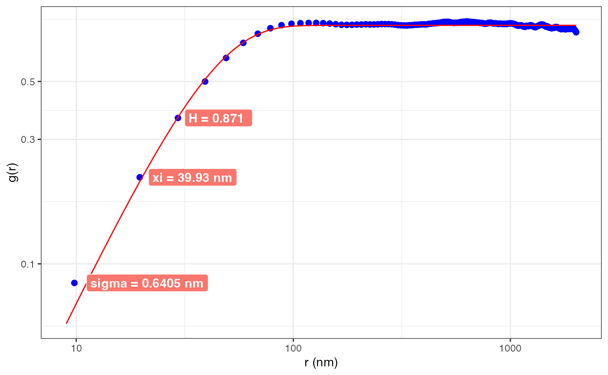

Computes the height-height correlation function for an AFM data object; note
that any background should be removed first. Since the full computation would
be lengthy, yet a random subset generally converges to the full result, the
numIterations parameter is used to limit the iterations. It should be
increased for images with more pixel resolution. With higher resolution, the
degRes should also be increased. For each iteration a random pixel
and a random angle with resolution degRes is generated Then, the height-height
correlation \(g(r) = |h(x) - h(x+r)|^2\) for that point is computed,
where \(r\) stretches from 1 to pixel resolution of the image (scaled by
r.percentage). Since the AFM image is generally square, some locations / angles
will not have data for large r and are ignored. Given the random numbers, slightly
different results may be obtained in different runs. To limit the variation, the
same random numbers can be used, when the randomSeed is populated with a
prime number. It is recommended to run with allResults = TRUE.
The resulting data curve \(g(r)\) is fit to the following equation: \(2 \sigma^2 (1 - \exp \left[ -(\frac{r}{\xi})^{2H} \right] ) \)
\(\sigma\): roughness
\(\xi\): correlation length
\(H\): Hurst parameter, \(\alpha=2H\)
Publication: http://iopscience.iop.org/article/10.1088/1742-6596/417/1/012069 Title: Height-Height Correlation Function to Determine Grain Size in Iron Phthalocyanine Thin Films Authors: Thomas Gredig, Evan A. Silverstein, Matthew P Byrne Journal: J of Phys: Conf. Ser. Vol 417, p. 012069 (2013).
AFM.hhcf(
obj,
no = 1,
numIterations = 10000,
addFit = TRUE,
dataOnly = FALSE,
degRes = 100,
r.percentage = 80,
xi.percentage = 70,
randomSeed = NA,
allResults = FALSE,
verbose = FALSE
)AFMdata object
channel number
Number of iterations (must be > 1000), but 10^6 recommended
if TRUE a fit is added to the data
if TRUE returns data frame, otherwise returns a graph (OBSOLETE, use allResults)
resolution of angle, the higher the better, should be >100, 1000 is also good, but takes more time
a number from 10 to 100 representing the distance to compute, since the image is square, there are not as many points that are separated by the full length, 80 is a good value, if there is no fit, the value can be reduced to 70 or 60.
a number from 10 to 100 representing where correlation length could be found from maximum (used for fitting)
(optional) a large number, if set, the random numbers are seeded and the results are reproducible
if TRUE returns graph, data and fit parameters as list
output time if TRUE
graph, data frame with g(r) and $num indicating number of computations used for r, or a list with the graph, data.frame, fit parameters
filename = AFM.getSampleImages(type='tiff')
a = AFM.import(filename)
a = AFM.flatten(a)
r = AFM.hhcf(a, numIterations = 5e5, allResults = TRUE)
head(r$data) # output HHCF data
#> r.nm g num
#> 1 9.803922 0.08437141 498681
#> 2 19.607843 0.21569236 496456
#> 3 29.411765 0.36541625 494127
#> 4 39.215686 0.50120361 491653
#> 5 49.019608 0.61608500 489229
#> 6 58.823529 0.70302938 486780
head(r$fitData) # fit data curve data
#> r.nm g
#> 1 9 0.06066597
#> 2 10 0.07221660
#> 3 11 0.08444162
#> 4 12 0.09728038
#> 5 13 0.11067460
#> 6 14 0.12456816
head(r$fitParams) # output fit parameters
#> sigma xi Hurst sigma.err xi.err Hurst.err
#> 1 0.6397166 39.74865 0.8630284 0.0004061273 0.5560641 0.03005544
r$graph # output ggplot2 graph
